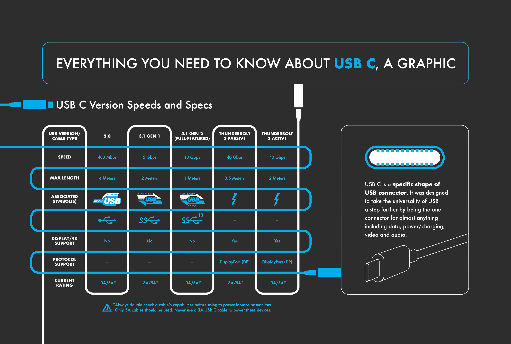

2025-02
2025-02-05
Google Rust Course
Google Comprehensive Rust Course
TSMC Revenu

2025-02-04
System B 2025
Reasons not to refactor
The Philosophy of Architecture
The Philosophy of Architecture - Barry O'Reilly - NDC Oslo 2024


Type-C

PICO PIO 02-04
A Practical Look at PIO on the Raspberry Pi Pico URL
Introduction to the PIO (Programmable Input Output) of the RP2040
Chip Alliance

Chisel HDL
F4FPGA
John Maynard Keynes
Masters Of Money | Part 1 | John Maynard Keynes
2025-02-03
PICO PIO 02-03
programmable-io-programming @ circuitcellar URL
Xilinx 7 Series Family Compare
7-series-product-selection-guide PDF
Sipeed FPGA Console use Gowin